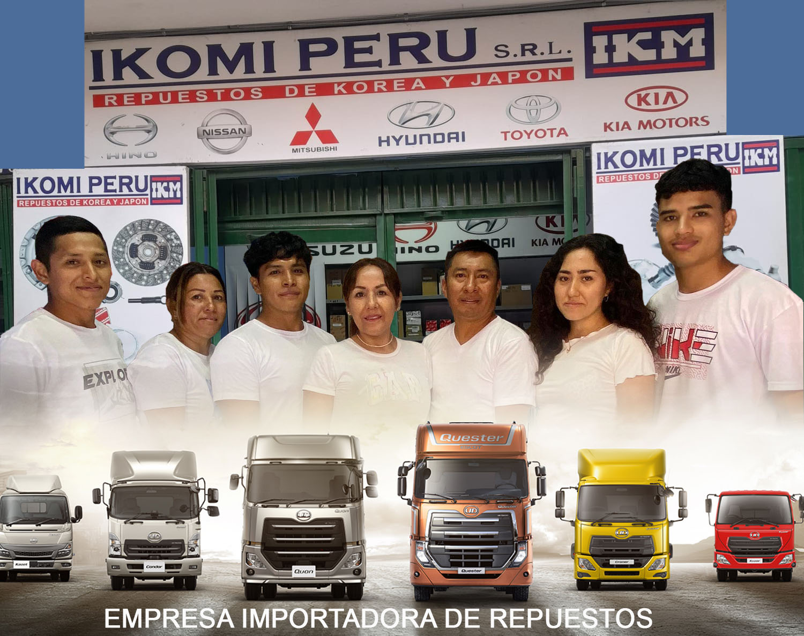

Equipo

Almacén

Tienda

Empresa

Equipo
Almacén
Tienda
Empresa
IKOMI PERU es una compañía dedicada a la importación y comercialización de repuestos automotrices al por mayor y por menor para vehículos medianos y pesados de las principales marcas de origen koreano y japonés.
Nuestra empresa viene satisfaciendo las necesidades del rubro a nivel nacional desde 2009, cumpliendo con los estándares de calidad, seguridad y sostenibilidad que el mercado actual demanda.
IKOMI PERU, además de 15 años de presencia en el mercado peruano, cuenta con el respaldo de sus más de 3000 clientes y se posiciona como una de las empresas más destacadas en el rubro a nivel nacional.
En IKOMI PERU, nos comprometemos a satisfacer a nuestros clientes a través de colaboradores capacitados y mejora continua en la cadena de suministro. Valoramos la responsabilidad social y sostenibilidad, buscando un sistema de distribución ágil y seguro, minimizando nuestro impacto ambiental para construir un futuro ético y sostenible.
En IKOMI PERU, buscamos ser líderes reconocidos en el rubro automotriz, destacándonos por la calidad excepcional de nuestros productos y servicios. Nos esforzamos por superar expectativas, impulsados por la innovación constante y la excelencia en la satisfacción del cliente.
Entre nuestros proveedores se encuentran las mejores compañías de manufactura a nivel global, muchas de ellas certificadas con ISO 9001. Nuestras relaciones comerciales nos permiten realizar importaciones provenientes de diversas partes del mundo, potenciando el stock disponible con más de 5000 ítems diferentes.
La logística, se ha convertido para IKOMI PERU en una herramienta indispensable para ser eficiente, rentable y competitivo dentro de las exigencias del mercado actual de almacenamiento y distribución de pedidos de repuestos.